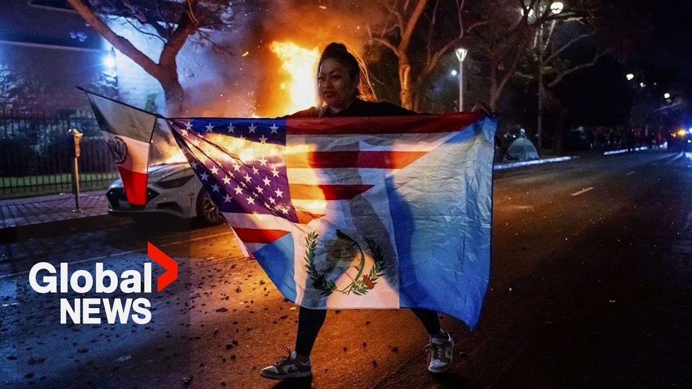

【反ICE抗议：随着全美动荡加剧，特朗普增派国民警卫队和海军陆战队】
Summary: Donald Trump has ordered additional troops to Los Angeles amid ongoing protests against immigration policies, sparking nationwide demonstrations and legal challenges from California.
摘要： 唐纳德·特朗普在针对移民政策的持续抗议中向洛杉矶增派部队，引发全美范围的示威活动，并招致加利福尼亚州的法律挑战。

⏱️ Estimated Reading Time: 12 min
📚 六级生词 📚 雅思生词 📚 托福生词 📚 专八生词 📚 SAT生词 📚 考研生词 📚 GRE生词 📚 高考生词 📚 视频里的生词
Donald Trump has ordered another 2,000 National Guard troops along with 700 Marines to head to Los Angeles as protests enter their fifth day.
唐纳德·特朗普已下令再派遣2000名国民警卫队士兵和700名海军陆战队员前往洛杉矶，此时抗议活动已进入第五天。
The president vowing those demonstrating against immigration arrests would be hit harder than ever.
总统誓言对抗议移民逮捕行动的人将采取比以往更严厉的打击。
If I didn't get involved, if we didn't bring the guard in, you had uh a disaster happening.
如果我不介入，如果我们不调遣警卫队，你们就会遭遇一场灾难。
Now, here to break down the very latest is our Washington correspondent Reggie Shaini.
现在，有请我们的华盛顿记者雷吉·沙伊尼来解析最新进展。
So Reggie, there were more protests last night, the fourth night of clashes between demonstrators and police.
雷吉，昨晚发生了更多抗议活动，这是示威者与警察冲突的第四晚。
Bring us up to speed on what exactly they're fighting against and the fact that protests aren't just contained to Los Angeles anymore.
请告诉我们他们究竟在抗议什么，以及抗议活动已不再局限于洛杉矶的事实。
Yeah, Miranda, that's right.
是的，米兰达，没错。
Uh we're seeing these protests outside of Los Angeles, throughout California, but they're also popping up elsewhere around the country, in the Northwest, in the South, through Dallas, in parts of Washington DC, up in Boston and New York as well.
我们看到这些抗议活动出现在洛杉矶以外，遍及加利福尼亚州，但它们也在全国其他地区爆发，包括西北部、南部、达拉斯、华盛顿特区部分地区，以及波士顿和纽约。
And all of it is tied to the Trump administration's policies that are targeted at illegal immigrants in the United States and these ICE raids or these immigrations and customs enforcement officers who are carrying out these targeted raids to try and go after and arrest anybody who's in the country illegally.
这一切都与特朗普政府针对美国非法移民的政策有关，以及这些ICE突袭行动或移民和海关执法官员正在执行的针对性突袭，试图追捕并逮捕任何非法居留者。
Uh the administration says that they are doing this to try and go after those who pose a threat to national security, those who have a criminal background and a history of criminal activity, but it's generally unclear who all is being swept up in these raids.
政府表示，他们这样做是为了追捕那些对国家安全构成威胁的人，那些有犯罪背景和犯罪历史的人，但通常不清楚哪些人被卷入了这些突袭行动。
And that's where part of this anger is on the streets in Los Angeles in that the uh that the policies that are coming out of the uh of the Trump administration aren't providing due process.
这就是洛杉矶街头部分愤怒的根源，即特朗普政府出台的政策没有提供正当程序。
They may be um you know going beyond the bounds of what uh the policy is actually intended to do.
它们可能超出了政策实际意图的范围。
And that is why you are seeing day after day here of outrage with the concern here that the big protests we're seeing in Los Angeles could ultimately spill outwards across the US.
这就是为什么你在这里日复一日地看到愤怒，人们担心我们在洛杉矶看到的大规模抗议最终可能蔓延到全美各地。
Well, Reggie, historically, when there are protests like these, some like to say that outside agitators are to blame.
雷吉，历史上，当出现此类抗议活动时，有些人喜欢归咎于外部煽动者。
And in this case, police in Los Angeles are actually using this term to describe some of the demonstrators.
而在这种情况下，洛杉矶警方实际上正在用这个词来描述一些示威者。
So, what can you tell us about these allegations of agitators and what that means?
那么，关于这些煽动者的指控及其含义，你能告诉我们什么？
Yeah, and look, we had the president of the United States yesterday on the south lawn of the White House calling them professional agitators, calling them insurrectionists, calling them quote very bad people.
是的，听着，昨天美国总统在白宫南草坪称他们为职业煽动者，称他们为叛乱分子，称他们为“非常坏的人”。
Uh, and the Los Angeles Police Department chief actually made a point of saying that some of these people are professional protesters.
洛杉矶警察局局长实际上特意指出，其中一些人是职业抗议者。
They're kind of um anarchists who who uh, you know, are are out there to try and create confrontation with police.
他们有点像无政府主义者，你知道，他们试图与警察制造对抗。
And what that does is take the spotlight off of the people who are actually protesting peacefully and turns it into more of a spectacle because these are the people who often times go out and they'll live stream the burning uh uh of vehicles and that's something that then gets the eye of the administration and then forces the administration's hand we as we've seen over the last few days.
这样做会将焦点从真正和平抗议的人身上转移，并将其变成一场闹剧，因为这些往往是那些出去直播车辆燃烧的人，而这会引起政府的注意，并迫使政府采取行动，正如我们过去几天所看到的那样。
This is not an isolated incident.
这不是孤立事件。
We've seen these allegations of professional protesters pop up around um the United States including back during the civil arrest uh riots uh in 2020.
我们看到这些关于职业抗议者的指控在全美各地出现，包括早在2020年公民逮捕骚乱期间。
Uh the question here is going to be what is the proportional force uh ultimately going to be to deal with these protesters?
这里的问题是，最终将采取何种比例的武力来应对这些抗议者？
Oftentimes smaller in nature compared to the bigger peaceful protests that go on, but the damage that's caused is part of what the damage being done is in the eyes of some of these protesters.
通常规模较小，与正在进行的大规模和平抗议相比，但造成的损害是一些抗议者眼中正在发生的损害的一部分。
All right, Reggie, it's no secret that President Trump and California Governor Gavin Newsome have never really seen eye to eye.
好吧，雷吉，众所周知，特朗普总统和加利福尼亚州州长加文·纽瑟姆从未真正意见一致。
California is now pushing back against the presence of these federal troops.
加利福尼亚州现在正在抵制这些联邦部队的存在。
the governor now filing a suit against the Trump administration.
州长现在对特朗普政府提起诉讼。
So what exactly does it allege?
那么它具体指控了什么？
Well, so the suit alleges uh a number of things.
好吧，诉讼指控了几件事。
Number one, that the president is out of his kind of purview of the allowance of having the the National Guard federalized.
第一，总统超出了其允许国民警卫队联邦化的权限范围。
The National Guard in California is typically under control of the state's governor.
加利福尼亚州的国民警卫队通常由州长控制。
That would be Gavin Newsome right now.
目前就是加文·纽瑟姆。
And he would be the one charged with bringing them out if there is some kind of need for them.
如果有某种需要，他将负责调遣他们。
Typically, we see the National Guard brought out after uh a natural disaster in trying to help kind of secure an area.
通常，我们看到国民警卫队在自然灾害后被调遣，试图帮助保护某个地区。
Donald Trump federalizing uh the National Guard, at least in the eyes of California, uh is unconstitutional uh because there's a fear here, number one, that it violates the 10th Amendment, which is what gives states their own rights, but also that it violates what's known as the Posi Commatatus Act, and that bars any kind of uh US military from operating as police on city streets.
唐纳德·特朗普将国民警卫队联邦化，至少在加利福尼亚州看来，是违宪的，因为这里有一种担忧，第一，它违反了第十修正案，该修正案赋予各州自己的权利，而且它还违反了所谓的《地方保安队法》，该法禁止任何美国军事力量在城市街道上充当警察。
Now, it's worth pointing out the National Guard and these hundreds of mil of Marines that have been activated, they're being used in kind of a protective capacity right now to look after not only police but also federal buildings.
现在，值得指出的是，国民警卫队和这些数百名海军陆战队员已被激活，他们目前被用于保护能力，不仅保护警察，还保护联邦建筑。
But, uh, in the eyes at least of uh, California and the state's attorney general, uh, he said that quote, uh, you know, the the the use of law enforcement is reserved for a dire narrow circumstance.
但是，至少在加利福尼亚州和州总检察长看来，他说，你知道，执法手段的使用是为极端狭窄的情况保留的。
And it goes on to say that the president's violation of the act is imminent.
并继续说总统违反该法的行为迫在眉睫。
This will go to court.
这将诉诸法庭。
The question is, will the court side with the state?
问题是，法庭会站在州一边吗？
All right.
好吧。
And Reggie, Trump and his defense secretary just appeared to be pouring fuel on the fire.
雷吉，特朗普和他的国防部长似乎正在火上浇油。
As we mentioned off the top, they are activating even more troops.
正如我们一开始提到的，他们正在激活更多部队。
What can you tell us about that?
关于这一点，你能告诉我们什么？
Yeah, so look uh I heard a number this morning that uh it's in and around 4700 uh National Guard troops and Marines, around 700 Marines that are being sent into the Los Angeles area.
是的，听着，我今天早上听到一个数字，大约有4700名国民警卫队士兵和海军陆战队员，约700名海军陆战队员被派往洛杉矶地区。
And that's actively more troops on the ground in Los Angeles than the United States actively has in Syria right now uh fighting uh back against ISIS.
这实际上比美国目前在叙利亚打击ISIS的地面部队还要多。
And I think that is where some of the anger on the streets is coming from in that this is an unnecessary show of force at least in the eyes of Californians from the White House as it tries to carry out its immigration uh policy.
我认为这就是街头部分愤怒的根源，即这是一种不必要的武力展示，至少在白宫试图执行其移民政策时，在加利福尼亚人看来是如此。
Uh and the concern here, at least in California, is that if the United States uh government can federalize the National Guard to quell a protest, which is a first amendment right of Americans, does that threat exist across the United States and other states, other governors, other cities may find themselves under the control uh of the president who simply wants to shut down people's voices who are speaking out against the policies coming from uh the Trump administration here.
这里的担忧，至少在加利福尼亚州，是如果美国政府可以联邦化国民警卫队来镇压抗议，而抗议是美国人的第一修正案权利，那么这种威胁是否存在于全美各地，其他州、其他州长、其他城市可能会发现自己处于总统的控制之下，而总统只是想压制那些反对特朗普政府政策的人的声音。
There have been some uh political commentators who have said that this is kind of a sign that the United States is slipping further towards an authoritarian state given the fact that people having a right to protest is one of those foundational principles that the country was built on.
一些政治评论员表示，鉴于人们有权抗议是国家建立的基本原则之一，这某种程度上是美国进一步滑向威权国家的迹象。
All right, we'll continue to follow this story very closely.
好吧，我们将继续密切关注这个故事。
Reggie, as always, thank you so much for the update.
雷吉，一如既往，非常感谢你的更新。
We appreciate it.
我们非常感谢。
Thank you.
谢谢。
That is our Washington correspondent, Reggie Chaini.
这是我们的华盛顿记者雷吉·柴尼。